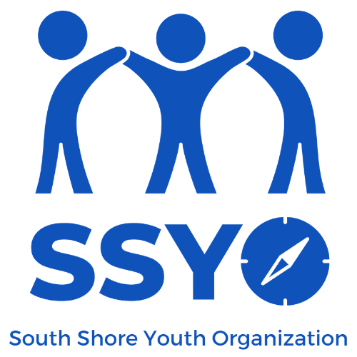
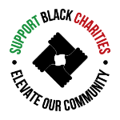

Maximizing visibility & reducing administrative workload through accessibility- & content-focused UX/UI overhaul and web development for the South Shore Youth Organization (SSYO).
Feb 2026 – Ongoing
Open to UX/Product Roles
Trusted By




I currently work at Copywriting Creatives as a Solutions Designer, focusing on content and accessibility design.
Prior to that, I managed the digital lifecycle for the University of Toronto’s ECE Department. While my primary focus was content and accessibility design for both the public website and the intranet, I pivoted regularly between UX research, front-end development, and production design.
To look at other work and explore my process in detail for the ECE department, check out this page.

Information Architecture • Institutional Web • Accessibility (AODA) • Shipped Jan 2025
Fragmented information flow was hindering student recruitment and departmental engagement. I restructured through Figma and handled WordPress implementation.
My journey hasn't been defined by a single UX specialization, but by a relentless desire to solve riddles across the entire UX spectrum. Here's some real-world results I've delivered.
Lowered design-to-dev discrepancies by implementing standardized documentation, saving teams weeks of rework.
Generated recurring revenue for an industrial manufacturing client by redesigning their conversion funnel.
Designed investor microsites that successfully differentiated brands in saturated markets to close funding.
Below, you can explore a major GenAI studio transformation I led, and a recent list of various projects I’ve tackled.
Prior to my work at the University of Toronto, I led an experience design firm where I managed both high-level consultancy and internal teams to deliver operational and financial workflow solutions. During this period, I partnered with Fix It In Post Studios to plan the integration of Generative AI within their ecosystem without disrupting delivery timelines or compromising output quality.

Digital Transformation • Service Design • Workflow Optimization • Shipped Jul 2023
Led an initiative to build, test, and implement a Human-in-the-Loop workflow to integrate generative AI tools into studio workflows, designing operational controls for AI-assisted video production into studio practice.
Disclaimer: These pages are still being developed. These include case studies built externally at Copywriting Creatives. The JKR projects are additionally covered by an NDA.
Maximizing visibility & reducing administrative workload through accessibility- & content-focused UX/UI overhaul and web development for the South Shore Youth Organization (SSYO).
Feb 2026 – Ongoing

Maximized content discoverability by restructuring global navigation and creating content design frameworks for Humber River Family Health Team.
Dec 2025 – Feb 2026
Bridging the gap between front-end sales conversion and back-end operational processing to improve Industrial Manufacturing Client's Value Chain.
Dec 2022 – Jun 2023
Delivered design system with governance and lifecycle processes, reducing design-to-dev discrepancies across all product modules for Fintech SaaS Client.
Sep 2021 - Aug 2023
Developing an Interactive Web Experience for a Fix It In Post Studios client (Film Director) to aid market and raise capital for a Film during the Pre-Production phase.
Jun 2021 - Jul 2021
Founder & Creative Director
Copywriting Creatives
I hold two Master’s degrees: a Master of Information (UX) from the University of Toronto and in Electronic Media from Anna University, Chennai. This academic background, combined with 7+ years of contract and freelance work in design, allows me to approach UI/UX as a science.

Graduation PhotoBooth Picture. Pictured Above (From L-R, Tp-Bt): Kyle, Jay, Alexis, Ashfaaq, Quinn, Karthik, and Nicholas.
Between 2023-2025, I was at the University of Toronto working towards my Master's degree in Information Sciences. Here, I worked on a variety of academic projects - most of which, while Academic, were with real clients, working on real stakeholder pain points.

Pro Bono work for the Canadian Hispanic-Latin American Virtual Museum (CHLAVM), to improve global navigation & accessibility, including a design system.
Jan 2025 – Apr 2025

Business Process Modelling Project at the Faculty of Music, UofT, to design a Business Model for an AI-Enabled Music Education-Aid Technology.
Sep – Dec 2024
UXD Project at the Faculty of Information, UofT, to design a solution (Ticket Discoverability App) for easingg access to GLAM discounts.
Oct – Dec 2023
Pro Bono work for the Textile Museum of Canada to improve global navigation & discoverability on the website including an implementation/testing strategy.
Oct – Nov 2023
Explore my design thinking through my articles on LinkedIn.
Whether it’s a simple question or a big idea: Don’t hesitate to reach out!